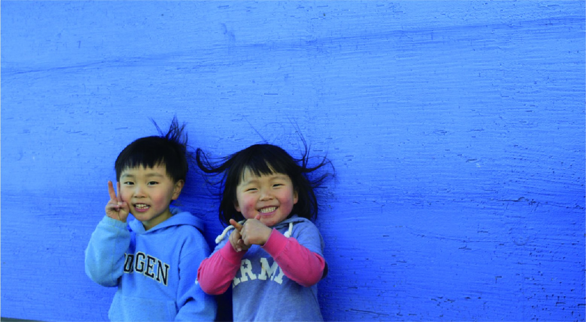
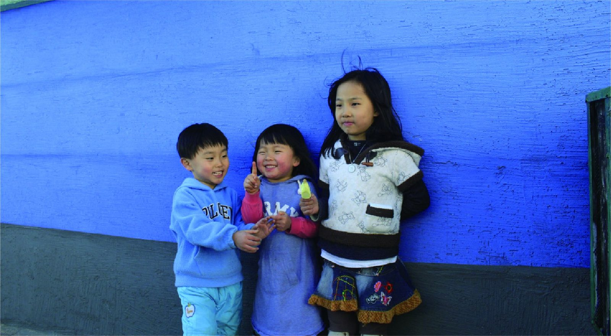
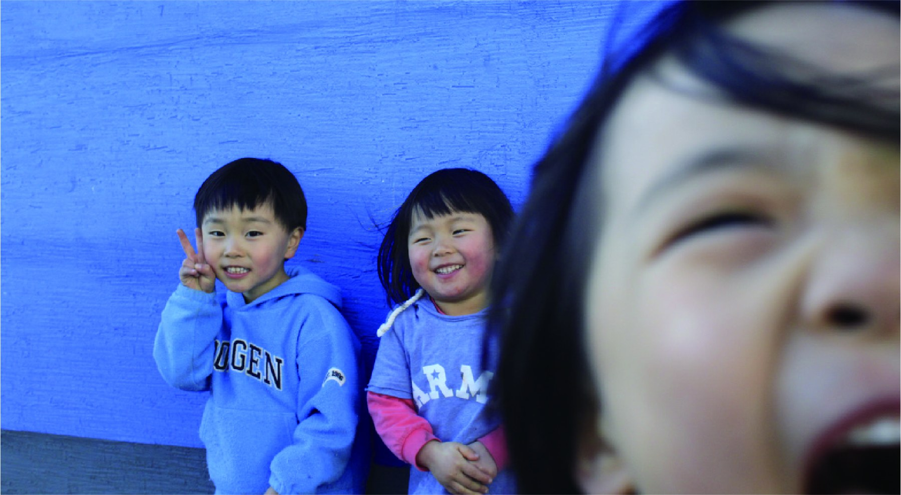

아시다시피 아이들은 그 자체로 완벽한 피사체였고, 포착 연기는 더할 나위 없이 천연했으며, 해 지기 직전의 빛은 완벽하게 우리를 감쌌다.
갑자기 카메라 앞에 나타난 아이들은 어떤 연출보다 자연스러웠다. 웃어달라고 말하지 않아도 웃었고, 서 있어달라고 부탁하지 않아도 벽 앞에 멈춰 섰다. 나는 그저 그 순간이 너무 빨리 지나가지 않도록, 셔터를 누르는 일에만 집중하면 됐다.

빛은 장면을 고르는 사람보다 먼저 도착한다. 해가 낮게 내려앉을수록 벽은 더 푸르게 보였고, 아이들의 얼굴에는 아직 사라지지 않은 하루의 밝음이 남아 있었다. 그 사이에서 나는 내가 무엇을 찍고 있는지보다, 왜 이 장면 앞에서 멈췄는지를 더 생각하게 됐다.
나는 마치 근사한 사진가라도 된 듯한 기분에, 갑자기 찾아온 천사들에게 헤벌쭉거리며 “잘 찍었지?” 하고 자랑하고 싶었다. 하지만 그보다 먼저 든 생각은 조금 이상했다. 좋은 사진은 내가 만든다기보다, 잠깐 허락받는 것에 가깝다는 생각.

포착한다는 것
다큐를 만들다 보면 기다림이 대부분의 시간을 차지한다. 어떤 사람의 말이 익숙해질 때까지, 어떤 공간의 리듬이 보일 때까지, 그리고 카메라가 있다는 사실이 잠시 잊힐 때까지. 사진도 크게 다르지 않았다.
좋은 장면은 종종 애써 만든 틈보다, 아무렇지 않은 시간의 끝에서 찾아왔다. 카메라를 든 사람이 조금 느슨해지는 순간. 찍히는 사람이 자신을 의식하지 않는 순간. 빛과 그림자가 각자의 자리를 찾는 순간.
사진은 때때로 내가 본 것을 남기는 일이 아니라, 내가 미처 다 이해하지 못한 시간을 받아 적는 일처럼 느껴진다.

남는 여운
이 사진들이 오래 남는 이유는 잘 찍혀서만은 아닐 것이다. 그날의 빛, 아이들의 웃음, 내가 우쭐했던 마음과 동시에 조금 부끄러웠던 마음까지 함께 붙어 있기 때문이다. 프레임 안에는 피사체만 남는 것이 아니라, 찍는 사람의 태도도 함께 남는다.
그래서 나는 이 장면을 볼 때마다 조금 더 조심스러워진다. 빛이 좋았다고 말하기 전에, 아이들이 예뻤다고 말하기 전에, 그 순간이 나에게 잠시 와주었다는 사실을 먼저 떠올리게 된다.
빛과 그림자가 남긴 여운은, 결국 내가 찍은 사진보다 그 앞에서 내가 어떤 사람이었는지를 더 오래 묻는다.
윤동규 PD의 에세이
빛과 그림자, 우연히 찾아온 장면에 관한 윤동규 PD의 글을 5ft.mag에서 만나보세요.